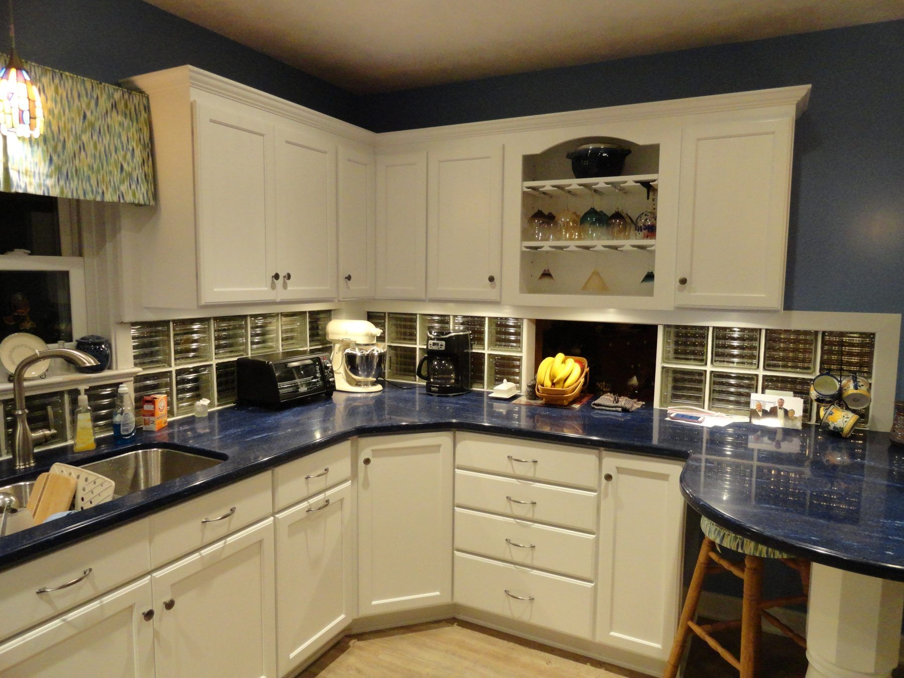
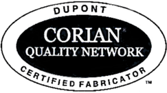

Corian® surfaces
Color. Form.
Possibility.
From colors and design options to exact measurements, we’ll help you choose the Corian® surfaces that are right for you.


Corian® Certified Fabricator
Expertise in
every surface.
Style-Line Kitchens has been trained and accredited by DuPont to fabricate and install Corian®. Your new Corian® will be professionally installed—often in just one day.
Explore Corian® colors at DuPont
Made for the way you live
From kitchen
to bath.
Virtually unlimited choices of colors and styles for your kitchen countertops. Beautiful finishing details for your bathroom.
- Countertops
- Integral Sink Bowls
- Backsplashes
- Shower Walls and Bases
- Tub Walls